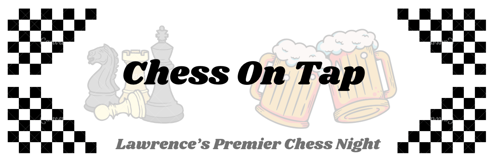
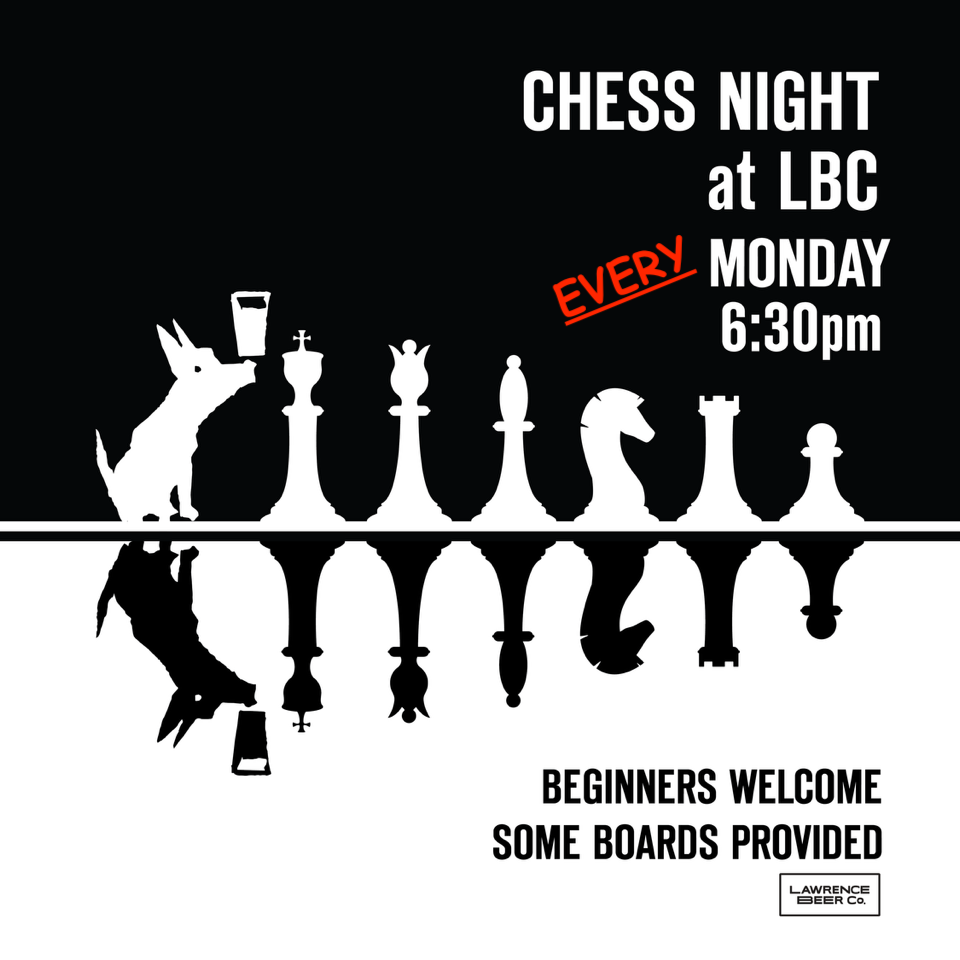

Have a beer, make friends, and play some chess! Join us for chess night in Lawrence, KS. Beginners welcome. Bring a board/clock if you have one-- if not some will be provided.
All ages and abilities are welcome to come hang out... even if you don't know how to play at all!

Monday 8/18/25
A great showing tonight by the younger generation of chess enthusiasts! 😎

Monday 6/16/25
State champs Kyle and Fred duked it out in pretty even games. Regulars Jamie, Luna, Jason and Tristan joined in on the action! 👍

Monday 6/9/25
Chess night is going strong this summer... We were joined this evening by some KU chess club folks, three KS state champs, and some new faces!


Monday 5/5/25
A beautiful spring evening to hang out with friends and play some chess!


Monday 4/28/25
Aside from the usual chess fun, tonight we a analyzed a famous chess trap: Legal's Mate


Wednesday 4/16/25
Delegation from the LBC Chess Team plays in KU simul tournament against GM Conrad Holt! We did our best.
Thanks to KU Chess Club for organizing!

Monday 4/14/25
The regular crowd in top form!


- NEWS FLASH! -
Great news! Chess Night now has a permanent home! We will be meeting at LBC (East) on Monday evenings at 6:30pm. Much thanks to Matt and the LBC staff for continuing to be wonderful hosts.
Lawrence Beer Co. (2/24/25)
Good times were had by all! Especially nice for some of the members of the KU Chess Club to stop by (by the way, they meet on Wednesday evenings on campus).


Johnny's Tavern North (2/10/25)
A great second chess night! Great to meet some new folks that couldn't make it to our initial meeting last week. One highlight of the evening was bughouse! (four player chess on teams). Big thanks to Johnny's for hosting us.
Opening Night at Lawrence Beer Co. (1/27/25)